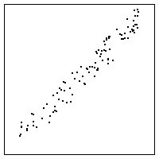
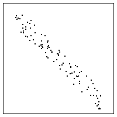
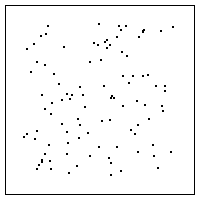

| 7. If successive values xi and xi+1 are nearby, then
the return map points |
| This was the lie. The center return map works if successive values sum to about 1.
If successive values differ by about 1, the return map points
|
|    |
Return to Homework 8 Practice.